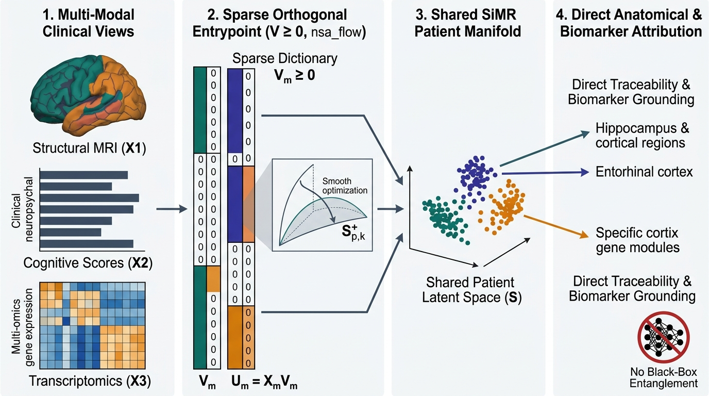

1 Introduction and Background
1.1 Clinical and Scientific Motivation: Why Multi-View Integration Must Be Auditable
Modern biomedical cohorts characterize disease across distinct physical, physiological, and behavioral scales. In neurodegenerative disorders such as Alzheimer’s disease, structural magnetic resonance imaging (MRI) quantifies millimeter-scale regional cortical thinning and subcortical volume loss (Jack et al. 2018; Dickerson et al. 2009; Fischl and Dale 2000; Tustison et al. 2014, 2021; Avants et al. 2011; Das et al. 2009), whereas clinical diagnosis and trial monitoring rely on multi-domain neuropsychological batteries measuring episodic memory, executive function, language, and daily functional independence (Rosen et al. 1984; Folstein et al. 1975; Morris 1993; Pfeffer et al. 1982; Reitan 1958; Rey 1964). In clinical oncology, projects such as The Cancer Genome Atlas (TCGA) profile primary tumors simultaneously across messenger RNA (mRNA) transcriptomics, somatic DNA copy-number variation (CNV), reverse-phase protein arrays (RPPA), and DNA methylation (Weinstein et al. 2013; The Cancer Genome Atlas Network 2012; The Cancer Genome Atlas Research Network 2013; Hoadley et al. 2018). Across both settings, clinicians and translational scientists require analytical methods that connect structural or molecular vulnerability to clinical phenotype without sacrificing anatomical or biological localization (Avants et al. 2010, 2014, 2021; Seeley et al. 2009; Rudin 2019).
A recurring tension in multi-modal data integration separates predictive accuracy from mechanistic interpretability. For a neurologist evaluating a patient with Mild Cognitive Impairment (MCI), predicting an aggregate cognitive decline score from a black-box neural network is insufficient for clinical decision-making or clinical trial stratification (Rudin 2019; Doshi-Velez and Kim 2017; Lipton 2018). The clinician must verify whether the predictive signal arises from established disease-vulnerable substrates—such as the entorhinal-hippocampal memory circuit of early Braak stages I–III (Braak and Braak 1991; Jack et al. 2018; Racine et al. 2018) or the temporoparietal and posterior cingulate association hubs of Braak stages IV–V (Dickerson et al. 2009; Buckner et al. 2005; Seeley et al. 2009; Cuingnet et al. 2011)—rather than from scanner artifacts, ventricular enlargement, or global brain atrophy. Similarly, a molecular tumor board cannot design a targeted assay from a dense principal component combining \(20,000\) transcripts; actionable translation requires isolating compact, non-redundant driver pathways such as estrogen-receptor transcriptional networks (ESR1, GATA3, PGR) or focal chromosomal amplifications (17q23, 8p11-p12) (Perou et al. 2000; Parker et al. 2009; The Cancer Genome Atlas Network 2012; Curtis et al. 2012; Prat and Parker 2020; Cohen et al. 2014).
Existing multi-view factorizations force an uncomfortable compromise between these clinical and computational goals:
- Dense Linear Factorizations Disperse Anatomical Signal: Principal Component Analysis (PCA) (Hotelling 1933), Canonical Correlation Analysis (CCA) (Hotelling 1936; Hardoon et al. 2004; Chaudhuri et al. 2009), Partial Least Squares (PLS) (Krishnan et al. 2011; Tenenhaus and Tenenhaus 2011; Tenenhaus et al. 2014), Joint and Individual Variation Explained (JIVE) (Lock et al. 2013), and Multi-Omics Factor Analysis (MOFA) (Argelaguet et al. 2020; Cantini et al. 2021; Abdi et al. 2013) estimate dense loading matrices in which every brain region or gene receives a non-zero weight of mixed positive and negative sign. In neuroimaging, the dominant principal component captures global brain size and diffuse cross-cortical covariance, obscuring focal disease networks behind sign cancellations (Zou et al. 2006; Witten et al. 2009; Kandel et al. 2015).
- Rigid Orthogonality vs. Rank Collapse in Sparse Matrix Decompositions: Non-negative Matrix Factorization (NMF) (Lee and Seung 1999, 2001; Hoyer 2004; Ding et al. 2006; Cichocki et al. 2009) and Sparse PCA / Sparse CCA (Zou et al. 2006; Witten et al. 2009; Parkhomenko et al. 2009) promote parts-based or localized weights. However, without explicit cross-column orthogonality control, sparse non-negative projections frequently suffer from rank collapse—where multiple latent components converge onto the same high-variance hub—whereas enforcing strict Stiefel manifold orthogonality (\(\mathbf{V}_m^\top \mathbf{V}_m = \mathbf{I}_k\)) (Edelman et al. 1998; Absil et al. 2008; Wen and Yin 2013; Boumal 2023) forbids overlapping biological pathways from sharing pleiotropic hub genes or transmodal cortical hubs (Buckner et al. 2009; Menon and Uddin 2010; Avants et al. 2021, 2025).
- Opaque Deep Multi-Modal Encoders: Deep Canonical Correlation Analysis (DCCA) (Andrew et al. 2013; Wang et al. 2015), multi-modal Variational Autoencoders (Wu and Goodman 2018; Shi et al. 2019; Higgins et al. 2017; Hinton and Salakhutdinov 2006; Vincent et al. 2008; Bengio et al. 2013), and contrastive multi-view transformers (Radford et al. 2021; Baltrušaitis et al. 2019) route raw measurements through multilayer non-linear encoders before aligning modalities. This composition destroys the direct linear mapping between input features and latent axes, forcing investigators to rely on post-hoc attribution approximations (
SHAP,LIME,Integrated Gradients) (Lundberg and Lee 2017; Ribeiro et al. 2016; Sundararajan et al. 2017; Alvarez-Melis and Jaakkola 2018) that can be unstable across correlated anatomical or genomic features (Rudin 2019; Hooker et al. 2019).

ADNI-MCI), or mRNA, copy-number variation, and proteomics in oncology (TCGA-BRCA)—are observed across shared subjects. (2) Sparse Orthogonal Entrypoint (\(\mathbf{V}_m \ge 0\), nsa_flow): Every modality enters exclusively through an auditable linear projection \(\mathbf{Z}_m = \mathbf{X}_m \mathbf{V}_m\) regularized by Non-Negative Stiefel Approximating Flow (nsa_flow), yielding localized, parts-based feature dictionaries with controlled column overlap (\(D(\mathbf{V}_m) \to 0\)). (3) Shared SiMR Patient Manifold: Modality projections align onto a shared patient embedding (\(\mathbf{U}\)) via linear consensus (SiMLR), non-linear decoding (LEND), or invertible normalizing flows (Flow-SiMR-V). (4) Direct Anatomical & Biomarker Attribution: Because the input boundary remains strictly linear and non-negative, latent axes map directly back to anatomical circuits (e.g., Braak stages) and patient-level feature contributions (\(c_{ij} = x_{ij} v_{jl}\)) without post-hoc black-box approximations.
1.2 The SiMR Framework: A Linear Entrypoint Paired with Flexible Multi-View Alignment
To satisfy both statistical learning requirements and clinical auditability, we formulate the Similarity-driven Multi-view Representation (SiMR) framework around a strict architectural boundary: the Linear Entrypoint Principle (Figure 1.1). Regardless of how complex the downstream cross-modal alignment or generative modeling becomes, every modality \(m \in \{1, \dots, M\}\) enters the model exclusively through an explicit, non-negative, sparse, and approximately orthogonal linear projection matrix \(\mathbf{V}_m \in \mathbb{R}_{\ge 0}^{p_m \times k}\):
\[ \mathbf{Z}_{m,\text{lin}} = \mathbf{X}_m \mathbf{V}_m \tag{1.1}\]
This architectural separation provides three foundational properties that appeal simultaneously to machine learning researchers and clinical domain specialists:
- Exact Feature-to-Factor and Patient-Level Attribution: Because each latent coordinate \(l \in \{1, \dots, k\}\) is an additive linear combination of non-negative weights (\(\mathbf{V}_m \ge 0\)), every column \(\mathbf{v}_{m,l}\) represents an immediately inspectable anatomical map or molecular module without sign-cancellation ambiguity (Lee and Seung 1999; Avants et al. 2021). At the individual patient level \(i\), the exact contribution of feature \(j\) to component \(l\) is the simple elementwise product \(c_{m,i,j,l} = x_{m,i,j} v_{m,j,l}\).
- Continuous Balance Between Pathway Overlap and Factor Redundancy (
nsa_flow): Rather than choosing between unconstrained sparsity (which permits duplicate components) and exact Stiefel manifold projection (which prohibits shared biological hubs), we constrain \(\mathbf{V}_m\) via Non-Negative Stiefel Approximating Flow (nsa_flow) (Edelman et al. 1998; Absil et al. 2008; Avants et al. 2021, 2025). A single trade-off weight \(w \in (0,1)\) continuously balances cross-modal alignment fidelity against scale-invariant column decorrelation and norm balance, while post-optimization quantile thresholding (\(q \in [0, 1)\)) allows investigators to dial continuously between pathway-wide discovery (\(q = 0.5\)) and ultra-compact diagnostic panels (\(q = 0.8\)). - Interchangeable Downstream Alignment Topologies: Holding the linear entrypoint \(\mathbf{Z}_{m,\text{lin}} = \mathbf{X}_m \mathbf{V}_m\) fixed, SiMR supports three modular alignment paradigms: (i) classical linear consensus optimization (
SiMLR) (Avants et al. 2021), (ii) non-linear multilayer perceptron decoding (LEND, alongside shared-private variantsNEDandNEDPP(Bousmalis et al. 2016; Salzmann et al. 2010)) that accommodates curved manifold structure in the decoders while keeping the encoder strictly linear, and (iii) invertible RealNVP normalizing flows (Flow-SiMR-V) (Dinh et al. 2017; Rezende and Mohamed 2015; Papamakarios et al. 2021) that align non-Gaussian biological distributions in an exact bijective latent space.
1.3 Subspace Preservation vs. Coordinate Axis Disentanglement
A central contribution of this work is resolving a widespread methodological confusion in representation learning benchmarks: why post-hoc rotation or mixing of latent variables often leaves multi-variable linear regression unchanged while destroying clinical interpretability and single-factor utility.
Suppose an algorithm learns a sparse, neuroanatomically localized projection \(\mathbf{V}_m \in \mathbb{R}^{p_m \times k}\), and a post-processing step multiplies \(\mathbf{V}_m\) on the right by any invertible \(k \times k\) mixing matrix \(\mathbf{M} \in \mathrm{GL}(k)\) (for example, an orthogonal Procrustes rotation (Schönemann 1966; Davis and Kahan 1970) or independent component unmixing matrix (Hyvärinen and Oja 2000)). For any downstream model that depends only on the column space of the projected features—such as ordinary least squares or lightly penalized ridge regression (Hoerl and Kennard 1970; Hastie et al. 2009)—the column space is mathematically invariant to \(\mathbf{M}\):
\[ \operatorname{span}(\mathbf{X}_m \mathbf{V}_m \mathbf{M}) = \operatorname{span}(\mathbf{X}_m \mathbf{V}_m) \quad \forall \, \mathbf{M} \in \mathrm{GL}(k) \tag{1.2}\]
Consequently, evaluating learned representations solely with multi-variable linear probes measures only overall subspace capacity, masking whether individual columns \(\mathbf{v}_{m,l}\) correspond to coherent biological systems or arbitrary diagonal mixtures. In contrast, coordinate-wise evaluations—such as axis-aligned decision trees (RandomForest (Breiman 2001)), single-biomarker clinical thresholds, and anatomical loading maps—depend directly on the orientation and sparsity of the individual coordinate axes. To separate these properties rigorously, our benchmark evaluates all nine candidate architectures across four complementary probes (Table 1.1).
| Evaluation Probe | Mathematical Target | Invariant to Right-Mixing \(\mathbf{V}_m \leftarrow \mathbf{V}_m \mathbf{M}\)? | What It Measures Clinically and Computationally |
|---|---|---|---|
| Multi-Variable Linear Probe | \(\text{Ridge}(\mathbf{X}_m \mathbf{V}_m) \to \mathbf{y}\) | Yes (as \(\alpha \to 0\)) | Total predictive information retained in the \(k\)-dimensional linear subspace \(\operatorname{span}(\mathbf{X}_m \mathbf{V}_m)\). |
| Axis-Aligned Tree Probe | \(\text{RandomForest}(\mathbf{X}_m \mathbf{V}_m) \to \mathbf{y}\) | No | Single-axis disentanglement: whether individual coordinates \(\mathbf{z}_{m,l}\) act as standalone clinical predictors under coordinate threshold splits. |
| Multi-Modal Consensus Probe | \(\text{Ridge}(\mathbf{U}_{\text{test}}) \to \mathbf{y}\) | Depends on fusion rule | Joint cross-modal variance captured when all views are simultaneously available at test time. |
| Feature Support & Orthogonality | \(F_1(\text{supp}(\mathbf{V}_m), \text{supp}(\mathbf{V}_m^*))\), \(D(\mathbf{V}_m)\) | No | Anatomical/molecular localization accuracy, sparsity percentage, and avoidance of duplicate or collapsed components. |
1.4 Summary of Contributions
- Unified SiMR Architecture and Open-Source Implementation: We present a self-contained mathematical and software formulation (
pysimlr+nsa_flow) uniting linear similarity-driven representation learning (SiMLR), non-linear decoding with a linear entrypoint (LEND), and detached-prior normalizing-flow alignment (Flow-SiMR-V). - Clinical Neuroimaging Translation in
ADNI-MCI(\(N = 1,084\)): Under a strict clinical deployment protocol where multimodal alignment is learned from structural MRI and cognitive scales during training but evaluated using structural MRI alone at test time,SiMLRimproves out-of-sample composite cognitive prediction by \(+65.8\%\) over raw anatomical ridge regression (\(R^2 = 0.252\) vs. \(0.152\)) and isolates three distinct neuroanatomical circuits matching Braak neurofibrillary staging (Braak and Braak 1991; Dickerson et al. 2009) while assigning zero weight to spared primary sensorimotor cortex. - Actionable Operating-Point Characterization Across 12 Benchmarks: Through a 9-method comparison across six real biomedical cohorts and six synthetic ground-truth regimes (\(1,215\) operating-point cross-validation folds plus a \(1,214\)-configuration hyperparameter sweep), we establish two practical operating regimes for
nsa_flowquantile thresholding: moderate sparsity (\(q = 0.5\)) for maximum pathway recovery (\(F_1 = 0.847\)) and predictive accuracy, and aggressive sparsity (\(q = 0.8\)–\(0.85\)) for ultra-compact biomarker panels retaining over \(99\%\) of peak linear predictive performance.